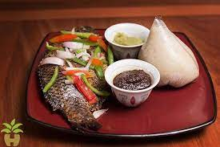

Banku with Tilapia Recipe

Banku with Tilapia
Banku with tilapia is one of the Famous and delicious Ghanaian Dishes originating from the Ga-Adangme people along the South-Eastern coast of Ghana.
This dish is mostly eaten with grinded pepper with sliced onions on it.
Ingredients
- 1 lb corn dough
- ¼ lb cassava dough (or up to ½ lb)
- 1 teaspoon salt
- 1 cup water (or up to 2 cups)
- 2 or 3 grilled tilapia
- 2 onions
- 2 round tomatoes
- small amount of pepper(red or green pepper)
Steps
- First, in a pot mix the corn and cassava dough with water until smooth, start with 1 cup of water then if you notice that still hard just add slowly until smo
- put over high heat and stir continuously
- Depending on how moist the processed dough was at the start, you can add more water may so far as the consistency is solid, but not too fir
- Turn Down the heat to medium and allow the banku to steam in the pot, surrounded by 2 tablespoons of water. This should take 3 to 5 minutes.Stir for about 1 minute then turn off the heat.
- Stir for about 1 minute then turn off the heat.
- Add the desired amount into a wet bowl and swirl around until you make a ball.
- Grill your tilapia.
- Grind the pepper in an earthenware bowl.
- Now you can serve the dish for consumption.